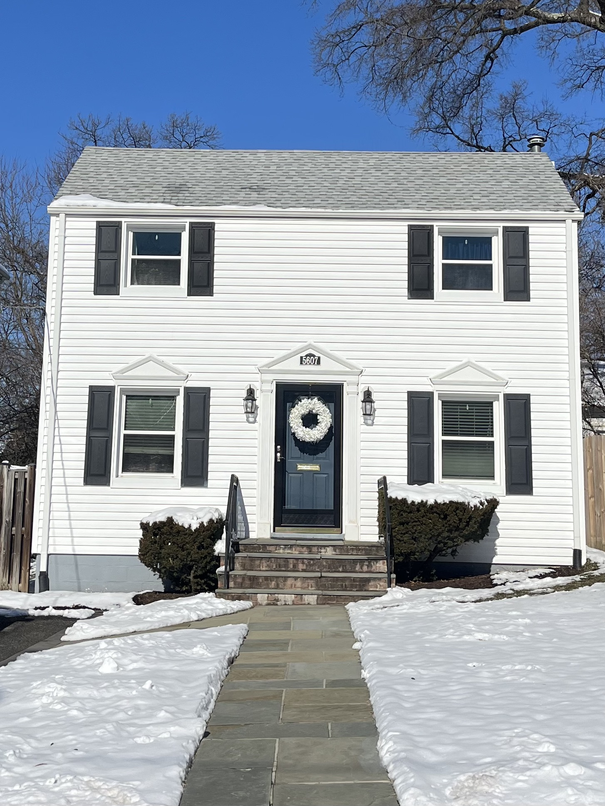

slowness
The hand has become increasingly less present in the web as we know it today. Websites are largely automated or built from templates, and the knowledge of how to make a website is relegated to a select few. It has only grown easier to learn how to make websites, but the perceived requirements and expectations for a website have become so convoluted and arcane that many avoid the subject. This course seeks to dispel these ideas and will emphasize the hand-quality of websites by developing an understanding of the best practices, language, history, and present context of the web. We will examine the space of the web at large and explore and challenge what a website is and can be with the hopes of reclaiming an important creative space.
